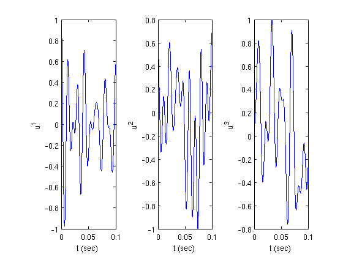

Time Encoding and Decoding of Multiple Signals with Multiple Neurons
This demo illsutrates the time encoding of several bandlimited signals with multiple neurons and their recovery using spline interpolation.
The demo corresponds to the example presented in Section 4.3 of the Consistent Recovery paper mentioned in the toolbox references.
Contents
Generating a Test Signal
Generate a noiseless signal 0.1 s long sampled at 10 GHz with a bandwidth of 100 Hz:
dur = 0.1; % duration dt = 1e-7; % sampling resolution fmax = 100; % bandwidth (Hz) t = [dt:dt:dur]; % time support
Truncate the time vector:
tr_vc = round(0.1*length(t)):round(0.9*length(t));
Use the maximum possible number of frequency components:
rand('twister',0); randn('state',0); mc = floor(0.6*floor(t(end)/dt)*fmax*dt);
Set the number of signals to generate:
M = 3; u = zeros(M,length(t)); for i=1:M ut = gen_test_signal(t(end)+(2*round(0.1*length(t))-1)*dt,dt,fmax,-Inf,mc); u(i,:) = ut((round(0.1*length(t))+1):end-round(0.1*length(t))); u(i,:) = u(i,:)/max(abs(u(i,:))); end
figure; for i=1:M subplot(1,M,i); plot(t,u(i,:)); ylabel(sprintf('u^{%d}',i)); xlabel('t (sec)'); end
Time Encoding
Set encoding parameters:
N = 12; % number of neurons delay = exprnd(1/2/fmax/40,N,M); % delays scale = 0.5 + 0.5*rand(N,M); % rank should be M b = 2.3 + rand(1,N); % biases d = 0.5 + rand(1,N); % thresholds C = 0.01*ones(1,N)/2; % capacitances
Set dendritic currents:
v = zeros(N,length(tr_vc)); for j=1:N for i=1:M v(j,:) = v(j,:)+scale(j,i)*u(i,tr_vc+round(delay(j,i)/dt)); end end
Encode the signal:
for j=1:N tk = cumsum([0,iaf_encode(v(j,:),dt,b(j),d(j),Inf,C(j))]); TK(1:length(tk),j) = tk'; LN(j) = length(tk); end
Time Decoding
Recover the signal:
u_rec = consistent_decoding_IF_MIMO(TK,LN,t(tr_vc)-t(tr_vc(1)),b,d,C,N,M,delay,scale); figure; for i = 1:M subplot(1,M,i);plot(t(tr_vc),u(i,tr_vc),t(tr_vc),u_rec(i,:)) ylabel(sprintf('u^{%d}',i)); xlabel ('t (s)'); end

Compute the SNR of the recovered signals:
for i = 1:M snr(i) = 10*log10(sum(u(i,tr_vc).^2)/sum((u(i,tr_vc)-u_rec(i,:)).^2)); end snr
snr = 21.2146 25.9649 31.4189
Author: Eftychios A. Pnevmatikakis
Copyright 2009-2010 Trustees of Columbia University